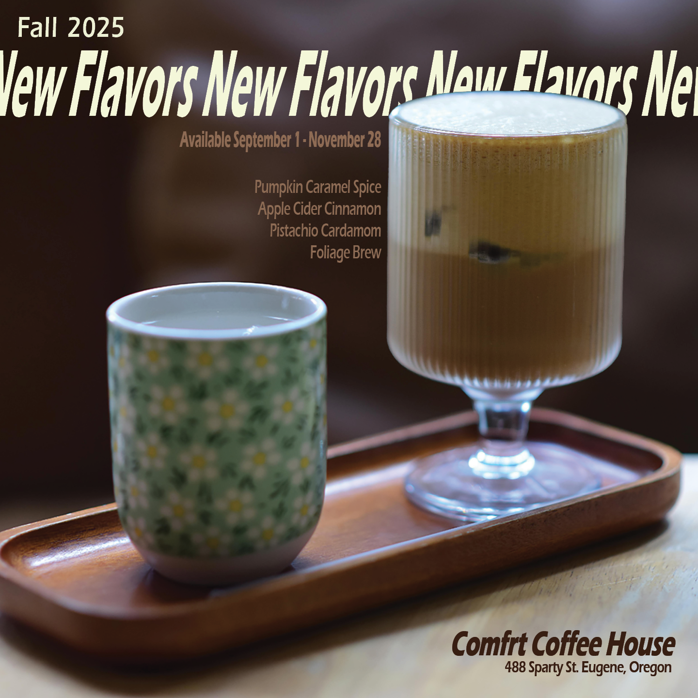

EGE Portfolio
About
Projects
Interdisciplinary
Email
← Back to project library
Digital Campaign Graphics
Social-ready graphics optimized for platform constraints and campaign messaging.
Open full image
